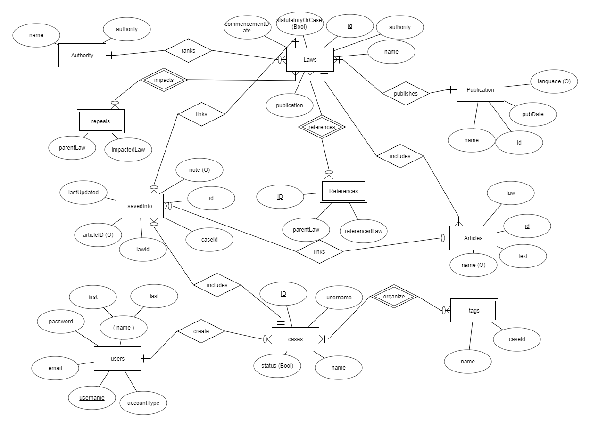

Project Details
Application Domain
The goal of the project is to create a database system that lawyers can use to retrieve legal information based on a set of attributes (e.g. publication year, type or section of legal document, etc). The database will only include Rwandan laws. In additional to retrieving information, lawyers will be able to manage cases using the web application. That is, they will be able to create a topic (i.e. legal case) and add links to the laws and/or sections of the laws that are relevant to the legal case.
Usefulness
As of now, Rwandan laws are only available as PDF documents and hard copies (unstructured data). As such, our project will be the first effort to turn Rwandan laws into structured data that can be queried using a set of attributes. We hope that this will reduce the amount of time lawyers spend on legal research. In addition, by showing additional information such as amended and repealed laws, we hope to increase the accuracy of legal information.
Realness
We downloaded the data from the Office of the Prime Minister of Rwanda’s website (https://goo.gl/gxEvnc). The data was downloaded PDF documents, which were later converted into text files. The raw files have been cleaned and converted into structured data.
Functionality
Description of the functionality that you plan to offer. This is where you talk about how to meet the functionality requirements. There are two types of functions you need to offer:
Basic
Users will be able search laws based on a set of attributes including law name, publication date, law number, type of law, etc.
Users will be able to create, update, and delete legal cases and associated information (“insert”, “update”, and “delete” functionalities).
Advanced
Showing laws that are no longer up-date specifically laws that have been repealed or amended. This feature will attempt to facilitate lawyers to know which laws have been invalidated. Sometimes the language is explicit when repealing previous laws (e.g. “law # 090 of 2005 is hereby repealed…”) and sometimes the language is vague (e.g. “alls previous laws that contradict this law are hereby repealed…”). So, we will try to use NLP techniques to (at least) point out which previous law are referenced (or significantly related) to a subsequent/more recent law.
Advanced keyword search: we will implement n-gram and tf-idf algorithms to enable users to search using natural language queries.
We also aim to implement a user authentication system.
Lastly, we would like to add a feature for laws auto-querying. That is, if a law is referenced in the text, a user should be able to click on and go to the page with that law.
Entity Relationship Diagram
Assumptions
English descriptions on the assumptions made